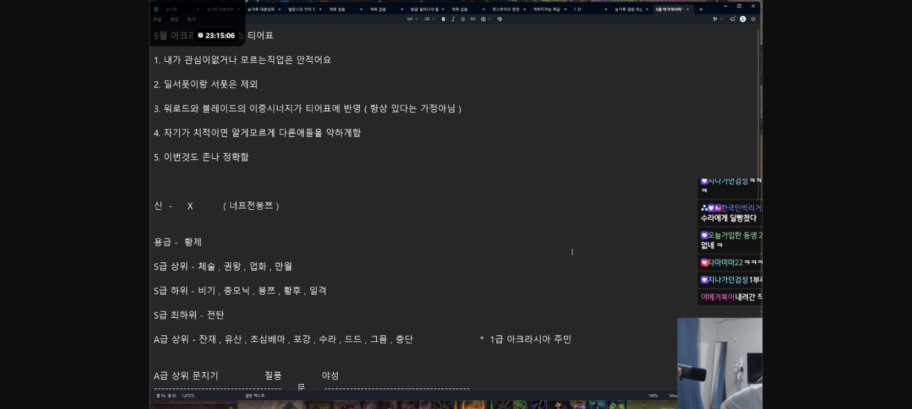
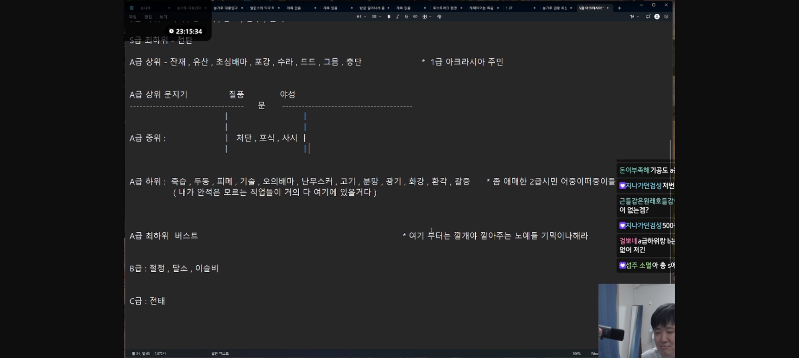

Mappings rebuilt 2026-05-19 against an authoritative English translation by laur (Discord, 5/7/2026), which corrected 14 slang assignments my earlier automated research had wrong. KR class / build / core names are gold-standard from Loawa — Korea's in-game-data-backed rank site — so the official KR names below match exactly what shows up in the Loawa filter UI. Where a row notes Laur's framing in italics, that's his commentary, not mine.
| KR slang | Class | Identity engraving / build |
|---|---|---|
| 황제 | Arcanist | Order of the Emperor (황제의 칙령) — "emperor" |
| 황후 | Arcanist | Grace of the Empress (황후의 은총) — "empress" |
| 체술 | Scrapper | Ultimate Skill: Taijutsu (극의: 체술) — Laur: "tai" |
| 충단 | Scrapper | Shock Training (충격 단련) — Laur: "shock scranner" [Scrapper] |
| 비기 | Berserker | Berserker Technique (광전사의 비기) — Laur: "BT" |
| 광기 | Berserker | Mayhem (광기) — "mayhem" |
| 권왕 | Breaker | Brawl King Storm (권왕파천무) — Laur: "BK breaker" |
| 수라 | Breaker | Asura's Path (수라의 길) — "asura" |
| 난무스커 | Striker | Esoteric Flurry (오의난무) — Laur: "eso striker" |
| 일격 | Striker | Deathblow (일격필살) — Laur: "deathblow (jjonji)" — KR-slang phonetic 쫀지. Laur reads its S- placement as a joke (Powdersnow lost to a 쫀지 player) |
| 초심배마 | Wardancer | First Intention (초심) — Laur reads the whole compound as First Intention Wardancer; the 배마 suffix doesn't change the class |
| 오의배마 | Wardancer | Esoteric Skill Enhancement (오의 강화) — Laur: "eso wardancer" |
| 잔재 | Deathblade | Remaining Energy (잔재된 기운) — Laur: "RE blade" |
| 버스트 | Deathblade | Burst (버스트) — official T4 KR name per Loawa. EN client labels it "Surge". namu wiki calls it 버스트 강화 but the in-game UI / Loawa filter is just 버스트 |
| 종모닉 | Shadowhunter | Demonic Impulse (멈출 수 없는 충동) — Laur: "demonic". The two Shadowhunter Ark Passive builds are Demonic Impulse and Perfect Suppression; 종모닉 is the Demonic Impulse one (my prior memory had this swapped) |
| 유산 | Machinist (KR Scouter) | Evolutionary Legacy (진화의 유산) — Hypersync transform. Laur: "evol scouter" |
| 기술 | Machinist | Arthetinean Skill (아르데타인의 기술) — Laur: "AT scouter" |
| 전탄 | Deadeye | Tactical Bullet (전술 탄환) — Laur: "EW deadeye". Note: my prior memory had 전탄 = Gunslinger Time to Hunt; that was wrong |
| 피메 | Gunslinger | Peacemaker (피스메이커) — Laur: "peacekeeper". Loawa's filter spells it 피스메이커 (KR transliteration of "Peacemaker"); namu wiki had 평화주의자 (KR translation) — Loawa wins because it matches the in-game UI |
| 사시 | Gunslinger | Time to Hunt (사냥의 시간) — Laur: "tth gs". 사시 = 사냥의 시간 abbreviation. Note: my prior memory had 사시 = Scrapper Taijutsu; that was wrong |
| 죽창 | Sharpshooter | Death Strike (죽음의 습격) — Laur: "death strike". Note: this slang reads as "death-spear" but in T4 KR community it means Death Strike Sharpshooter, not a Glaivier build |
| 두둥 | Sharpshooter | Loyal Companion (두 번째 동료) — Laur: "loyal companion" |
| 화강 | Artillerist | Firepower Enhancement (화력 강화) — Laur: "firepower arti" |
| 포갑 | Artillerist | Barrage Enhancement (포격 강화) — Laur: "barrage arti". Note: my prior memory had 포갑 = Glaivier Pinnacle; that was wrong, and the whole 113-vs-222 sub-build framing went with it |
| 환각 | Wildsoul | Phantom Beast Awakening (환수 각성) — Laur: "PBA ws" |
| 야성 | Wildsoul | Ferality (야성) — Laur: "ferality WS" |
| 고기 | Gunlancer | Lone Knight (고독한 기사) — lance/DPS build. Laur: "red GL" |
| 전태 | Gunlancer | Combat Readiness (전투 태세) — shield/defense build. (C tier — not visible in Laur's screenshot but matches namu wiki + the unambiguous 전태로드 community slang) |
| 트드 | Guardian Knight | Dreadful Roar (드레드 로어) — likely typo for 드드, the standard KR community slang. Investigation: Inven Gunlancer board 5339 has 0 hits for 트드 across 381 recent post titles; Inven Guardian Knight board 6469 has many active posts using 드드 for Dreadful Roar ("슈차드드", "드드에서 업화로", "아브 나메는 업화가 좋을려나 드드가 좋을려나"). Korean ㄷ/ㅌ are visually one stroke apart so 트드/드드 is an easy misread. Laur's "front attack GK" reading lines up: a 25-12-31 Inven guide is literally titled "관통 쓰러스트 드레드 로어" (Piercing Thrust Dreadful Roar). GK = Guardian Knight, not Gunlancer. This completes Guardian Knight's coverage on the tier list: 업화 (S+) + 드드 (A+) |
| 처단 | Slayer | Punisher (처단자) — Laur: "punisher slayer" |
| 포식 | Slayer | Predator (포식자) — Laur: "predator slayer" |
| 분망 | Destroyer | Rage Hammer (분노의 망치) — Laur: "rage hammer". 분망 = 분(노) + 망(치). Note: my prior memory had 분망 = Sorceress Reflux; that was wrong |
| 봉ㅉ | Destroyer | Gravity Training (중력 수련) — Laur: "GT destroyer". Note: my prior memory had 봉ㅉ = Souleater Night's Edge; that was wrong. The agent's namu-wiki research conflated 봉쯔 (Destroyer slang) with 봉인의 날 (older Souleater term) |
| 업화 | Guardian Knight | Hellfire Successor (업화의 계승자) — Laur: "spec dk" (Spec[ialist] D[ark] K[night]). The build name literally starts with 업화. Not Sorceress Igniter (my prior memory's mapping) |
| 만월 | Souleater | Full Moon Harvester (만월의 집행자) — Laur: "full moon" |
| 그믐 | Souleater | Night's Edge (그믐의 경계) — Laur: "night's edge" |
| 달소 | Reaper | Lunar Voice (달의 소리) — (B tier — not in Laur's screenshot, but unambiguous slang) |
| 갈증 | Reaper | Hunger (갈증) — Laur: "hunger" |
| 질풍 | Aeromancer | Wind Fury (질풍노도) — Laur: "windfury aero" |
| 이슬비 | Aeromancer | Drizzle (이슬비) — (B tier — not in Laur's screenshot, unambiguous) |
| 절정 | Glaivier | Pinnacle (절정) — (B tier — not in Laur's screenshot). Glaivier's other build (Control / 절제) is not on the tier list |
This page was rebuilt 2026-05-19 after laur (Discord) shared an authoritative English translation that contradicted 14 entries in my prior canonical reference. Specifically:
The root cause: T4 Ark Passive slang rotates fast, and namu wiki + Inven board searches are biased toward old-engraving-era usage. A native-speaker translator caught what dictionary-style aggregation missed. Second pass against Loawa. After Laur's rebuild, every official KR class / build name was cross-checked against Loawa's in-game-data-backed filter taxonomy. Two namu-wiki-derived KR names were corrected to match the in-game UI:
|